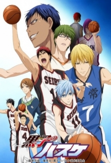
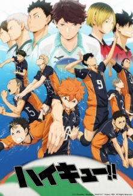
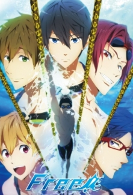
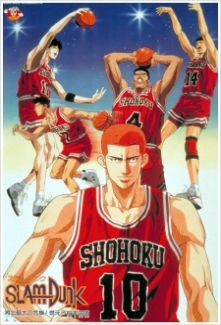
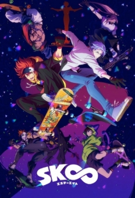
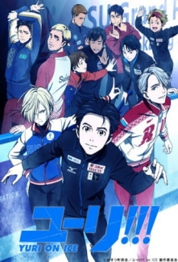

Kuroko no Basket
Teikou Orta Okulu'nun efsanevi basketbol takımı, bütün takımları yenmesi ve kupaları almasıyla "Mucizeler Takımı" ünvanıyla ün salmıştır. Orta okulun bitmesi ve lisenin başlamasıyla ise takım dağılmış, takımın her bir üyesi farklı liseye gitmiştir. Bu takımın bir üyesi olan Tetsuya Kuroko da Seirin Lisesi'nde okumaya başlamıştır. Burada basketbol takımına giren Kuroko Mucizeler Takımı'nın üyesi olmasına rağmen oyundaki yeteneksizliğiyle herkesi şaşırtır. Fakat, Kuroko'nun esrarengiz yeteneği onu müthiş bir takım oyuncusu yapmaktadır. Takımın diğer bir yetenekli oyuncusu olan Taiga Kagami ile beraber, diğer takımlara üstün gelerek en iyi olmayı amaçlayacaklardır.
Haikyuu!!
Bir şans etkinliği Shouyou Hinata’nın voleybol aşkını tetikler. Takımında hiç oyuncu yoktur ama bir şekilde gayret ederek “Kortun Kralı” olarak bilinen, süper star, Tobio Kageyama tarafından ezildikleri ilk ve son Orta okullar ligi maçına çıkmayı başarırlar. İntikam ateşiyle yanıp tutuşan Hinata, nefret ettiği ezeli rakibi Kagayema’yla karşı karşıya gelmek için Karasuno Lisesi’nin voleybol takımına kaydolur.Tek amacı intikam almaktır! Haruichi Furudate’nin kaleminden dinamik ve kanı kaynayan gençliği anlatan bir voleybol hikayesi.
Free!
Hikaye her zaman suya dalmayı ve içinde yüzmeyi sevmiş bir çocuk olan Haruka Nanase’nin etrafında döner. İlkokuldan mezun olmadan önce, o yüzme kulübünün diğer üyeleri Makoto Tachibana, Nagisa Hazuki ve Rin Matsuoka ile birlikte bir yüzme turnuvasına katılmıştır. Zafer elde ettikten sonra, çocukların her biri kendi yollarına gitmiştir. Zaman geçmiştir, olaysız lise hayatlarının ortasında Rin ortaya çıkar ve Haruka’ya bir maç için meydan okur, Haruka ona ezici gücünü gösterir. Böyle sona ermesini istemeyen, Haruka bir kez daha Makoto ile Nagisa’yı bir araya toplar ve Rei Ryugazaki adlı yeni üyeyi ikna edip Rin’i yenmek amacıyla Iwatobi Lise Yüzme Kulübünü oluşturur.
Slam Dunk
Hanamichi Sakuragi, sürekli kavga eden, sürekli aşık olan ve de sürekli ret edilen, liseli bıçkın bir delikanlıdır. En son aşık olduğu Haruko Akagi, tarafından da ret edilir. Ama Haruko, Hanamichi’yi neden ret ettiğinin açıklamasını da yapar. Basketbol klübünden biriyle çıkmak istemektedir. Sevdiği kızın kalbini kazanmak ve onunla çıkmak için, o zamana kadar amatör olarak yaptığı dövüş sporlarından başka sporla ilgilenmemiş Hanamichi, basketbol klübüne katılmaya karar verir.
SK8 the Infinity
Reki; S’ye, terk edilmiş bir madende yapılan oldukça gizli ve tehlikeli kaykay yarışlarına, bağımlı lise ikinci sınıf öğrencisidir. Kaykaycılar özellikle “mevzu” ya da yarışlardaki kızışmalara deli olur.rnrnReki, yurt dışında okuyup Japonya’ya nakil olarak gelen Langa’yı alır ve yarışların gerçekleştiği madene götürür. Kaykayla alakalı hiçbir deneyimi olmayan Langa, birden kendisini “S” dünyasının içine çekilmiş halde bulur.
Yuri!!! on Ice
Serinin hikâyesi, buz Pateni müsabakasının Gran Prix finalinde tüm Japonya’nın umudunu omuzlarında taşıyan, ancak ezici bir şekilde mağlup edilen Yuuri Katsuki’nin etrafında dönmektedir. Kyushu’daki evine dönen karakterimiz, bir yarısının buz patenininden emekli olmak, diğer bir yarısının ise devam etmek istediğini hissetmektedir. Bu karışık duygular içerisinde dönüp dururken, kendisini ailesinin evine kapatır. Aniden, arka arkaya beş kere dünya şampiyonu olan buz patenisti Viktor Nikiforov, yanında kendisinden kıdemli olanları çoktan yenmiş genç bir Rus artistik patinajcı olan Yuri Plisetsky ile birlikte önünde belirir. Viktor, Yuri ve Yuuri’nin üçü de, eşi benzeri görülmemiş Gran Prix serisi üzerine olan meydan okumayı kabul ederler.